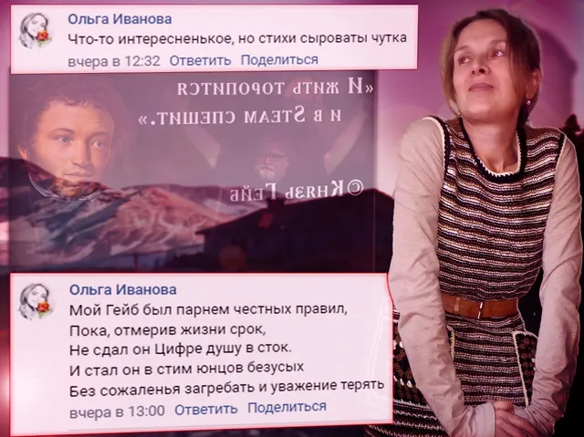

Ваши комментарии
ВКонтакте
🌄 Если бы я решил написать философские труды, то, вероятно, назвал бы их "Опреде…
20 февраля 2022 · №1907 в выгрузке стены · оригинал во ВКонтакте ↗


🌄 Если бы я решил написать философские труды, то, вероятно, назвал бы их "Определенность бытия" - максимально абстрактная и завораживающая формулировка, формирующее представление к полноценному пониманию чего-то настолько сокровенного для каждого, того, что было бы достаточно сложно облечь на словах, пожалуй, именно это непременно и нашёл бы ознакомившийся, но мы еще так далеко.
✅ Титул Комментатора же сегодня получают:
🌟 [id347679904|Андрей Язин]
⭐ [id356181250|Ольга Иванова]
=================================
Завтра понедельник, отдыхаем.
🎬 #ВашиКомментарии@criticssteam #66
✅ Титул Комментатора же сегодня получают:
🌟 [id347679904|Андрей Язин]
⭐ [id356181250|Ольга Иванова]
=================================
Завтра понедельник, отдыхаем.
🎬 #ВашиКомментарии@criticssteam #66